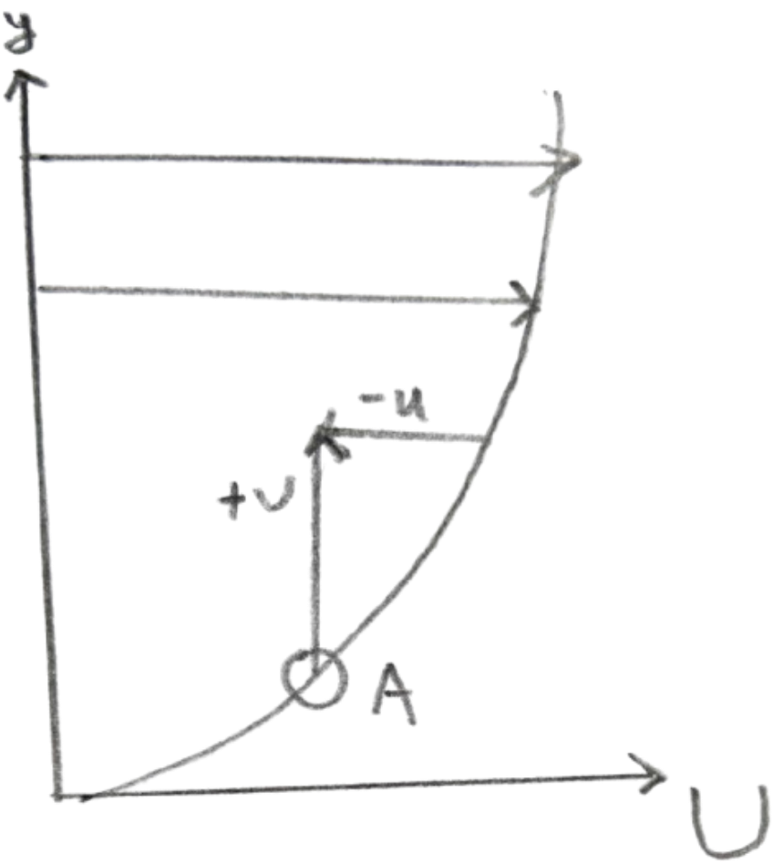

The difference in form between the Reynolds equation and the Navier-Stokes (N-S) equations lies in the appearance of the Reynolds stress term $\overline{u_i' u_j'}$. From the perspective of statistical averaging, the Reynolds equation still contains all the information of turbulent motion. The Reynolds stress has the following characteristics:

The fluctuating velocity correlations bring about momentum transfer (the effect of additional stress). Consider a mean flow field with $\partial U/\partial y > 0$. At point A, if a fluid particle has a positive velocity fluctuation $v$, it will bring low-momentum fluid into a high-momentum region, resulting in a negative $u$ fluctuation. Similarly, for a negative $v$ fluctuation, a positive $u$ fluctuation is also likely to occur. Therefore, when $\partial U/\partial y > 0$, $\overline{uv}$ is usually negative, producing a momentum flux in the negative $y$ direction.
1Song Fu & Liang Wang (2023). Theory of Turbulence Modelling. ISBN 978-7-03-074639-9.